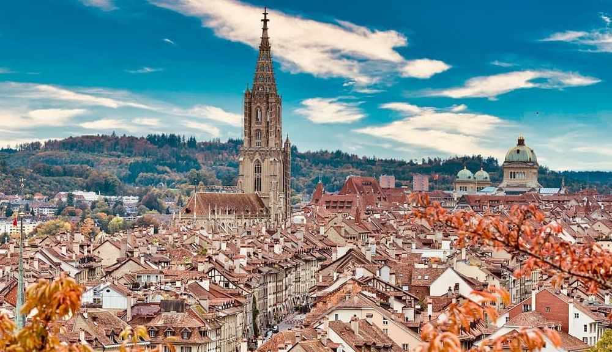

Descoperă Berna - O călătorie în Elveția
Berna este capitala Elveției și un oraș plin de istorie și cultură, oferind o varietate de atracții interesante pentru vizitatori:
-

Zytglogge din Berna - Turnul cu ceas
Zytglogge este un ceas astronomic vechi de secole, cunoscut pentru călătorii sale automate la fiecare oră.
-

Bear Park din Berna - Rezervația urșilor
Parcul Bear Park oferă un mediu natural pentru urși și vă permite să îi observați într-un habitat apropiat de cel sălbatic.
-

Rosengarten din Berna - Grădină cu trandafiri
Explorați Rosengarten, o grădină frumoasă cu trandafiri, oferind o vedere panoramică asupra orașului.
-

Biserica Münster din Berna - Catedrala gotică
Biserica Münster este o catedrală gotică impresionantă, cunoscută pentru arhitectura sa grandioasă și turnul înalt.
Concluzii
Berna este un oraș bogat în istorie și atracții culturale, cu o combinație unică de arhitectură, peisaje și experiențe.